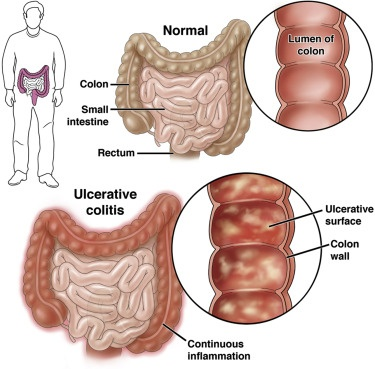

Ulcerative colitis

SYMPTOMS:
Ulcerative colitis symptoms can vary, depending on the severity of inflammation and where it occurs. Signs and symptoms may include:
- Diarrhea, often with blood or pus
-
Abdominal pain and cramping
-
Rectal pain
-
Rectal bleeding — passing small amount of blood with stool
-
Urgency to defecate
-
Inability to defecate despite urgency
-
Weight loss
-
Fatigue
-
Fever
-
In children, failure to grow
CAUSES
- The exact cause of ulcerative colitis remains unknown. Previously, diet and stress were suspected, but now doctors know that these factors may aggravate but don't cause ulcerative colitis.
-
One possible cause is an immune system malfunction. When your immune system tries to fight off an invading virus or bacterium, an abnormal immune response causes the immune system to attack the cells in the digestive tract, too.
-
Heredity also seems to play a role in that ulcerative colitis is more common in people who have family members with the disease. However, most people with ulcerative colitis don't have this family history.